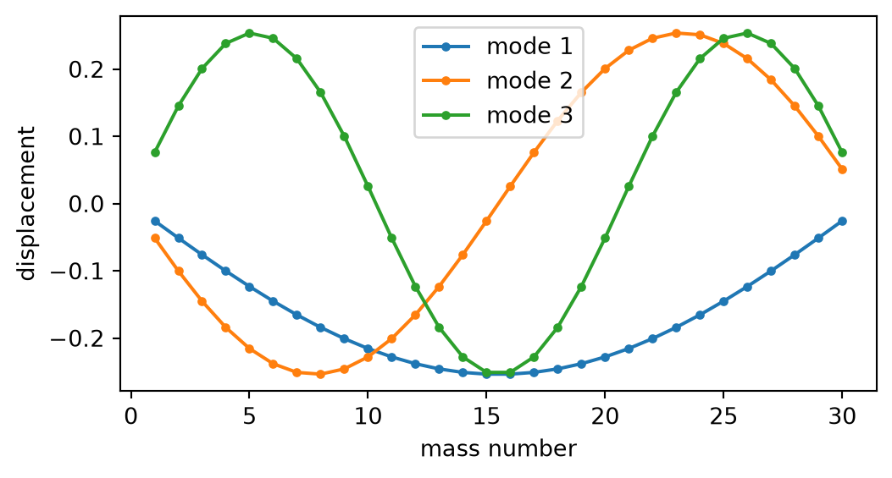

Solutions to the exercises in Part VI, grouped by chapter, followed by the solutions to the Part VI review. Try each exercise before reading its solution. The link after each solution takes you back to its exercise.
1. By symmetry the two members carry the same force \(N\). Each has length 5, and its unit vector from the loaded joint towards its support is \(\tfrac{1}{5}(\mp 3, 4)\), so its vertical component is \(\tfrac{4}{5}N\). Vertical equilibrium: \(2 \times \tfrac{4}{5}N = 12\), so \(N = 7.5\) kN, in tension. As a matrix system, with the unknowns \(N_1, N_2\) and the four reaction components at the two pins, the loaded joint’s equations are \[
\mat{-0.6 & 0.6 \\ 0.8 & 0.8}\mat{N_1 \\ N_2} = \mat{0 \\ 12},
\] giving \(N_1 = N_2 = 7.5\); the pin equations then give reactions \((4.5, -6)\) and \((-4.5, -6)\) kN, with the pins pulling the members outwards and holding them up.
2. (a) \(m + r = 11 + 3 = 14 = 2j\): can be determinate (it is the Warren bridge of the app). (b) \(8 + 3 = 11 < 12\): a mechanism. (c) \(8 + 4 = 12 > 10\): indeterminate, with 2 redundant members (if it is not also a mechanism somewhere).
3. At the top joint, with the load \((10, 0)\), the equations are \[
-\tfrac{1}{\sqrt{2}}N_b + \tfrac{1}{\sqrt{2}}N_c + 10 = 0,
\qquad
-\tfrac{1}{\sqrt{2}}N_b - \tfrac{1}{\sqrt{2}}N_c = 0,
\] so \(N_c = -N_b\) and \(N_b = 5\sqrt{2} \approx 7.07\) kN (tension), \(N_c \approx -7.07\) kN (compression). At joint 2, \(-N_a - N_c/\sqrt{2} = 0\) gives \(N_a = 5\) kN, and \(R_{2y} = -N_c/\sqrt{2} = 5\) kN. At joint 1, \(R_{1x} = -N_a - N_b/\sqrt{2} = -10\) kN and \(R_{1y} = -N_b/\sqrt{2} = -5\) kN. The pin resists the whole horizontal push, and the supports form a couple, one pulling down and the other pushing up, to stop the truss tipping over.
4. Look at the joint at the far end of each vertical from the chord it would otherwise help. Bottom joint 1 has only the two horizontal bottom-chord members and the vertical 1–5, and no load, so vertical equilibrium there gives \(N_{15} = 0\); the same at bottom joint 3 gives \(N_{37} = 0\). Top joint 6 has the two horizontal top-chord members and the vertical 2–6, and no load, so \(N_{26} = 0\). These zero-force members still matter: they hold the chords straight, and they carry load when the load moves to joints 1 or 3 (exercise 7).
5. The extension of member \(k\), from joint \(i\) to joint \(j\), is \(\delta_k = \vect{e}\T\vect{u}_j - \vect{e}\T\vect{u}_i\), so row \(k\) of \(\M{B}\) has \(-\vect{e}\T\) in the columns of joint \(i\) and \(+\vect{e}\T\) in those of joint \(j\). Column \(k\) of the equilibrium matrix has \(+\vect{e}\) in the rows of joint \(i\) and \(-\vect{e}\) in those of joint \(j\): it is minus the transpose of row \(k\) of \(\M{B}\). So, restricted to the free joints, the member part of the equilibrium matrix is \(-\M{B}\T\), and the equilibrium equations \(-\M{B}\T\vect{N} + \vect{p} = \zerovec\) say \(\M{B}\T\vect{N} = \vect{p}\).
6. The middle bar now contributes \(2EA\mat{0 & 0 \\ 0 & 1}\), so \(\M{K} = EA\mat{0.707 & 0 \\ 0 & 2.707}\) and \(u_y = -10/(2.707\,EA)\). Then \(N_B = 2EA \times 10/(2.707\,EA) = 7.39\) kN and \(N_A = N_C = \tfrac{1}{2} \times 10/2.707 = 1.85\) kN. Check: \(7.39 + 2 \times 1.85/\sqrt{2} = 7.39 + 2.61 = 10\). ✓ The stiffer bar attracts more of the load: in an indeterminate structure, load goes where the stiffness is.
import numpy as npdef truss(P, members, supports, loads): P = np.array(P, dtype=float) reactions = [(j, d) for j, kind in supports.items() for d in ([0, 1] if kind =="pin"else [1])] A = np.zeros((2*len(P), len(members) +len(reactions)))for k, (i, j) inenumerate(members): e = (P[j] - P[i]) / np.linalg.norm(P[j] - P[i]) A[2* i:2* i +2, k] += e A[2* j:2* j +2, k] -= efor r, (j, d) inenumerate(reactions): A[2* j + d, len(members) + r] =1 b = np.zeros(2*len(P))for j, (fx, fy) in loads.items(): b[2* j:2* j +2] = [-fx, -fy]return A, bjoints = [[0, 0], [4, 0], [8, 0], [12, 0], [16, 0], [4, 4], [8, 4], [12, 4]]members = [(0, 1), (1, 2), (2, 3), (3, 4), (5, 6), (6, 7), (1, 5), (2, 6), (3, 7), (0, 5), (4, 7), (5, 2), (7, 2)]forces = []for j in [1, 2, 3]: A, b = truss(joints, members, {0: "pin", 4: "roller"}, {j: (0, -20)}) forces.append(np.linalg.solve(A, b)[:len(members)])forces = np.array(forces)for (i, j), col inzip(members, forces.T):print(f"{i}-{j}: max tension {max(col.max(), 0):6.2f}, max compression {abs(min(col.min(), 0)):6.2f}")
0-1: max tension 15.00, max compression 0.00
1-2: max tension 15.00, max compression 0.00
2-3: max tension 15.00, max compression 0.00
3-4: max tension 15.00, max compression 0.00
5-6: max tension 0.00, max compression 20.00
6-7: max tension 0.00, max compression 20.00
1-5: max tension 20.00, max compression 0.00
2-6: max tension 0.00, max compression 0.00
3-7: max tension 20.00, max compression 0.00
0-5: max tension 0.00, max compression 21.21
4-7: max tension 0.00, max compression 21.21
5-2: max tension 14.14, max compression 7.07
7-2: max tension 14.14, max compression 7.07
P= [00;40;80;120;160;44;84;124];members= [12;23;34;45;67;78;26;37;48;16;58;63;83];supports= [12;51];F=zeros(3,size(members,1));fork=1:3 [A,b] =truss(P,members,supports, [k+10-20]);f=A\b;F(k,:) =f(1:size(members,1))';end[max(F, [],1);min(F, [],1)]'% largest and smallest force in each member% The function truss from the chapter, repeated so that this script runs on its ownfunction [A,b] =truss(P,members,supports,loads)% Equilibrium matrix A and right-hand side for a pin-jointed truss.% Unknowns: member forces (tension positive), then reactions.nj=size(P,1);nm=size(members,1);reac= [];fors=1:size(supports,1)j=supports(s,1);ifsupports(s,2) ==2,reac= [reac;j1;j2];else,reac= [reac;j2];endendA=zeros(2*nj,nm+size(reac,1));fork=1:nmi=members(k,1);j=members(k,2);e= (P(j,:) -P(i,:)) /norm(P(j,:) -P(i,:));A(2*i-1:2*i,k) =A(2*i-1:2*i,k) +e';% member pulls joint i towards jA(2*j-1:2*j,k) =A(2*j-1:2*j,k) -e';% and joint j towards iendforr=1:size(reac,1)A(2*reac(r,1) -2+reac(r,2),nm+r) =1;endb=zeros(2*nj,1);forl=1:size(loads,1)b(2*loads(l,1)-1:2*loads(l,1)) =-loads(l,2:3)';endend
Over the three load positions, the bottom chord carries 5 to 15 kN of tension, the top chord 10 to 20 kN of compression, and the end posts 7.07 to 21.21 kN of compression. The two interior diagonals are the only members that change sign: each carries 14.14 kN of tension when the load is in the middle, or under it, but 7.07 kN of compression when the load is on the far side. They must be designed for both, which for a slender member in compression means guarding against buckling. The verticals at joints 1 and 3 carry 20 kN of tension when the load is directly on them, and the middle vertical never carries anything for these loads.
1. The conductances are 0.25 S (4 Ω) and 0.5 S (2 Ω), so \[
\mat{0.75 & -0.5 \\ -0.5 & 0.75}\mat{V_1 \\ V_2} = \mat{2 \\ 0}.
\] The second row gives \(V_2 = \tfrac{2}{3}V_1\), and the first then \(0.75V_1 - \tfrac{1}{3}V_1 = 2\), so \(V_1 = 4.8\) V and \(V_2 = 3.2\) V.
2.\(\M{G} = \M{A}\T\M{C}\M{A}\) is symmetric, and for any \(\vect{v}\), \[
\vect{v}\T\M{G}\vect{v} = (\M{A}\vect{v})\T\M{C}(\M{A}\vect{v}) = \sum_k c_k(\M{A}\vect{v})_k^2 \ge 0,
\] since every conductance \(c_k > 0\). This is zero only if \(\M{A}\vect{v} = \zerovec\): every resistor has equal voltages at its ends. Following a path from any node to ground, each node’s voltage then equals the next one’s, and finally ground’s, which is 0. So \(\vect{v} = \zerovec\), and \(\M{G}\) is positive definite. (The quantity \(\vect{v}\T\M{G}\vect{v}\) is the total power dissipated in the resistors.)
3. With \(V_t = 10\) known, KCL at \(a\) and \(b\) gives \[
\mat{\tfrac{1}{100} + \tfrac{1}{R_a} + \tfrac{1}{50} & -\tfrac{1}{50} \\ -\tfrac{1}{50} & \tfrac{1}{200} + \tfrac{1}{400} + \tfrac{1}{50}}\mat{V_a \\ V_b} = \mat{0.1 \\ 0.05}.
\] (a) With \(R_a = 200\) Ω, the matrix is \(\mat{0.035 & -0.02 \\ -0.02 & 0.0275}\). Trying \(V_a = V_b = V\), the two rows become \(0.015V = 0.1\) and \(0.0075V = 0.05\), which agree: \(V = \tfrac{20}{3} \approx 6.67\) V. So \(V_a = V_b\), and the meter current is zero. The bridge is balanced: \(100/200 = 200/400\), so each side divides the voltage in the same ratio, and no current flows across. Measuring an unknown resistor by adjusting a known one until the meter reads zero is the classic use of the bridge.
(b) With \(R_a = 300\) Ω, multiplying both equations by 1200 clears the fractions: \(40V_a - 24V_b = 120\) and \(-24V_a + 33V_b = 60\). The determinant is \(40 \times 33 - 24^2 = 744\), so \(V_a = (120 \times 33 + 24 \times 60)/744 = \tfrac{225}{31} \approx 7.258\) V and \(V_b = (40 \times 60 + 24 \times 120)/744 = \tfrac{220}{31} \approx 7.097\) V, so the meter carries \((V_a - V_b)/50 \approx 3.2\) mA from \(a\) to \(b\).
import numpy as npfrom scipy.optimize import brentqR, C =1e3, 1e-6def gain(w): Y = np.array([[2/ R +1j* w * C, -1/ R], [-1/ R, 1/ R +1j* w * C]])returnabs(np.linalg.solve(Y, [1/ R, 0])[1])w3 = brentq(lambda w: gain(w) -1/ np.sqrt(2), 1, 1e4)print(w3, w3 / (2* np.pi))
374.2391543388522 59.56201131155906
In MATLAB, fzero(@(w) gain(w) - 1/sqrt(2), [1 1e4]) does the same, with gain defined as a function that builds and solves the same complex system. The output falls to \(1/\sqrt{2}\) of the input (the cut-off or \(-3\) dB point) at \(\omega \approx 374\) rad/s, about 60 Hz: well below \(1/(RC) = 1000\) rad/s, because the second stage loads the first.
1. With \(h = 0.25\) and no source, the system is \(\mat{2 & -1 & 0 \\ -1 & 2 & -1 \\ 0 & -1 & 2}\vect{u} = (20, 0, 80)\T\), Elimination: \(R_2 \leftarrow R_2 + \tfrac{1}{2}R_1\) gives \(\tfrac{3}{2}u_2 - u_3 = 10\), and then \(R_3 \leftarrow R_3 + \tfrac{2}{3}R_2\) gives \(\tfrac{4}{3}u_3 = 80 + \tfrac{20}{3} = \tfrac{260}{3}\). Back substitution: \(u_3 = 65\), \(u_2 = \tfrac{2}{3}(10 + 65) = 50\) and \(u_1 = \tfrac{1}{2}(20 + 50) = 35\). So \(\vect{u} = (35, 50, 65)\T\). The exact solution is the straight line \(u = 20 + 60x\), which has these values. The central difference of a linear (or quadratic) function is exact, because its third and higher derivatives are zero.
2. From the Taylor expansion, \(\bigl(u(x + h) - u(x)\bigr)/h = u'(x) + \tfrac{h}{2}u''(x) + O(h^2)\): the error is proportional to \(h\). Subtracting the expansions for \(u(x + h)\) and \(u(x - h)\) cancels the even terms: \(u(x + h) - u(x - h) = 2hu'(x) + \tfrac{h^3}{3}u'''(x) + O(h^5)\), so \(\bigl(u(x + h) - u(x - h)\bigr)/(2h) = u'(x) + \tfrac{h^2}{6}u'''(x) + \ldots\), with error proportional to \(h^2\).
3.\(h^2q_1 = 0.0625\), so \[
\mat{2 & -1 & 0 \\ -1 & 2 & -1 \\ 0 & -1 & 2}\vect{u} = \mat{0.0625 \\ 0 \\ 0},
\] The same elimination steps as in exercise 1 give \(\tfrac{3}{2}u_2 - u_3 = \tfrac{1}{32}\) and then \(\tfrac{4}{3}u_3 = \tfrac{1}{48}\). Back substitution gives \(u_3 = \tfrac{1}{64} = 0.015625\), \(u_2 = \tfrac{2}{3}\bigl(\tfrac{1}{32} + \tfrac{1}{64}\bigr) = \tfrac{1}{32} = 0.03125\) and \(u_1 = \tfrac{1}{2}\bigl(\tfrac{1}{16} + \tfrac{1}{32}\bigr) = \tfrac{3}{64} = 0.046875\). The temperature is highest near the heated left part, and falls linearly across the unheated right part, where \(u'' = 0\).
4. The solution for the top edge alone, from Example 3, is 37.5 in the top two points and 12.5 in the bottom two. The solution for the left edge alone is the same pattern rotated: 37.5 in the left two points and 12.5 in the right two. Laplace’s equation is linear, so the solution with both edges hot is the sum: 75 °C top left, 50 °C top right and bottom left, and 25 °C bottom right. Directly, the equations for the four points give the same values.
5. There are \(100^3 = 10^6\) unknowns. Each row has 7 non-zeros, except for points next to the boundary, so there are just under \(7 \times 10^6\) non-zeros (exactly \(7 \times 10^6 - 6 \times 10^4\)). The full matrix has \(10^{12}\) entries, 8 terabytes; sparse storage needs about \(7 \times 10^6\) values and column numbers, under 100 MB.
import numpy as npimport scipy.sparse as spfrom scipy.sparse.linalg import spsolve, cgimport timefor n in [10, 20, 40, 80]: T = sp.diags([-1.0, 2.0, -1.0], [-1, 0, 1], shape=(n, n)) A = (sp.kron(sp.identity(n), T) + sp.kron(T, sp.identity(n))).tocsr() b = np.zeros((n, n)); b[0, :] =100 t0 = time.perf_counter(); u = spsolve(A, b.ravel()); t1 = time.perf_counter() steps = [] cg(A, b.ravel(), rtol=1e-8, callback=lambda xk: steps.append(1)); t2 = time.perf_counter()print(f"n = {n:3d}: direct {t1 - t0:.4f} s, CG {t2 - t1:.4f} s in {len(steps)} steps")
n = 10: direct 0.0004 s, CG 0.0025 s in 28 steps
n = 20: direct 0.0009 s, CG 0.0012 s in 57 steps
n = 40: direct 0.0036 s, CG 0.0030 s in 111 steps
n = 80: direct 0.0161 s, CG 0.0116 s in 217 steps
forn= [10204080]e=ones(n,1);T=spdiags([-e2*e-e],-1:1,n,n);A=kron(speye(n),T) +kron(T,speye(n));b=zeros(n);b(1,:) =100;tic;u=A\b(:);td=toc;tic; [x,flag,relres,iters] =pcg(A,b(:),1e-8,1000);tc=toc;fprintf('n = %3d: direct %.4f s, CG %.4f s in %d steps\n',n,td,tc,iters);endU=reshape(u,n,n);plot(linspace(0,1,n),U(:,round(n/2))) % temperature down the centre line
The number of CG steps roughly doubles each time \(n\) doubles, so it grows like \(n\), the square root of the condition number (which grows like \(n^2\)). Timings vary between computers, but at these small sizes the direct solver is as fast as CG or faster (in some versions of MATLAB, pcg is much slower than backslash at \(n = 80\)). CG pulls ahead only for much larger problems, especially three-dimensional ones, where direct elimination fills in badly. Along the centre line, the temperature falls from 100 °C at the hot edge to 0 at the opposite edge, steeply near the hot edge and gently further away: by the middle of the plate it is already down to 25 °C, as Example 3 showed.
1.\[
\M{R}(90°)\M{T}(3, 1) = \mat{0 & -1 & -1 \\ 1 & 0 & 3 \\ 0 & 0 & 1},
\qquad
\M{T}(3, 1)\M{R}(90°) = \mat{0 & -1 & 3 \\ 1 & 0 & 1 \\ 0 & 0 & 1}.
\] In each product, the top-left \(2 \times 2\) block is the rotation. The last column of \(\M{R}(90°)\M{T}(3, 1)\) is the rotation applied to \((3, 1)\), which is \((-1, 3)\); the last column of \(\M{T}(3, 1)\M{R}(90°)\) is just \((3, 1)\). The first translates by \((3, 1)\) and then rotates, so the origin goes to \((3, 1)\) and then to \((-1, 3)\). The second rotates first, which leaves the origin where it is, then translates it to \((3, 1)\).
4. Multiply: \[
\mat{\M{R}\T & -\M{R}\T\vect{t} \\ \zerovec\T & 1}\mat{\M{R} & \vect{t} \\ \zerovec\T & 1} = \mat{\M{R}\T\M{R} & \M{R}\T\vect{t} - \M{R}\T\vect{t} \\ \zerovec\T & 1} = \mat{\M{I} & \zerovec \\ \zerovec\T & 1},
\] using \(\M{R}\T\M{R} = \M{I}\). The camera’s position and orientation in the scene form a matrix of this kind; the view matrix is its inverse, which this formula gives without any numerical inversion.
5.\(\M{T}_1\M{T}_2\M{T}_3\) with angles \(45°\), \(-90°\), \(45°\). The links point in the directions \(45°\), \(45° - 90° = -45°\) and \(-45° + 45° = 0°\), so the hand is at \((\cos 45° + \cos(-45°) + 1, \; \sin 45° + \sin(-45°) + 0) = (1 + \sqrt{2}, 0) \approx (2.414, 0)\), and the last link points along the positive \(x\) axis (the rotation block of the product is the identity).
With \(\theta_2\) fixed, the hand moves on a circle about the base, of radius \(\sqrt{L_1^2 + L_2^2 + 2L_1L_2\cos\theta_2}\): about 2.18 for \(60°\) and 1.32 for \(120°\). Letting both angles vary fills the annulus between radii \(L_1 - L_2 = 0.5\) and \(L_1 + L_2 = 2.5\), as drawn in the app. MATLAB code follows the same steps, with cosd and sind.
1. With the states in the order W, B, \[
\M{M} = \mat{0.9 & 0.6 \\ 0.1 & 0.4}.
\] The steady state satisfies \(-0.1x_W + 0.6x_B = 0\), so \(x_W = 6x_B\), and with \(x_W + x_B = 1\), \(\vect{x} = (\tfrac{6}{7}, \tfrac{1}{7})\): the machine works on about 86% of days.
3. The entries of \(\M{M}\vect{x}\) are sums of products of non-negative numbers, so they are non-negative. Their sum is \(\vect{1}\T\M{M}\vect{x} = (\M{M}\T\vect{1})\T\vect{x} = \vect{1}\T\vect{x} = 1\), since each column of \(\M{M}\) adds to 1.
4. Its columns add to 1, and \(\M{M}(\tfrac{1}{2}, \tfrac{1}{2})\T = (\tfrac{1}{2}, \tfrac{1}{2})\T\) is a steady state. But from \((1, 0)\) the chain alternates \((0, 1)\), \((1, 0)\), … for ever. The eigenvalues are \(1\) and \(-1\), so the second has size 1, not less; no power of \(\M{M}\) has all its entries positive, so the chain is not regular (it is periodic).
Here \(0.05 = (1 - 0.85)/3\). The three equations are \[
\begin{aligned}
x_A - 0.425x_B - 0.85x_C &= 0.05, \\
-0.85x_A + x_B &= 0.05, \\
-0.425x_B + x_C &= 0.05.
\end{aligned}
\] The second gives \(x_B = 0.05 + 0.85x_A\), and then the third gives \[
x_C = 0.05 + 0.425x_B = 0.07125 + 0.36125x_A.
\] Substituting both into the first: \[
x_A - 0.02125 - 0.36125x_A - 0.0605625 - 0.3070625x_A = 0.05,
\] so \(0.3316875x_A = 0.1318125\) and \(x_A \approx 0.3974\). Then \(x_B \approx 0.05 + 0.3378 = 0.3878\) and \(x_C \approx 0.07125 + 0.1436 = 0.2148\). The three add up to 1, as they must.
A ranks highest, with links from both other pages; B is close behind, because A, the most important page, gives B its only link.
import numpy as npdef pagerank(links, d=0.85, steps=200):"""links[j] lists the pages that page j links to (0-based).""" n =len(links) x = np.ones(n) / nfor _ inrange(steps): y = np.full(n, (1- d) / n)for j, out inenumerate(links):if out:for i in out: y[i] += d * x[j] /len(out)else: # dead end: jump anywhere y += d * x[j] / n x = yreturn xdead_end = [[1, 2], [2], [], [0, 2], [3, 5], [3, 4]]print(np.round(pagerank(dead_end), 3))
The result, about (0.143, 0.130, 0.314, 0.172, 0.121, 0.121), matches the app. C, the dead end, ranks highest: three pages link to it, and since the surfer leaves it by a random jump, its rank is shared out evenly instead of being passed to any one page.
1.\(\M{L} = \mat{1 & 1.5 \\ 0.5 & 0}\), with characteristic equation \(\lambda^2 - \lambda - 0.75 = 0\), so \(\lambda = 1.5\) or \(-0.5\). The population grows by 50% a year. For \(\lambda = 1.5\), the second row gives \(0.5w_1 = 1.5w_2\), so \(\vect{w} \propto (3, 1)\): 75% first-years and 25% second-years.
2. The characteristic polynomial is \(p(\lambda) = \lambda^2 - f_1\lambda - sf_2\). It is negative at \(\lambda = 0\) (if \(sf_2 > 0\)) and positive for large \(\lambda\), and its positive root is the dominant eigenvalue. That root is above 1 exactly when \(p(1) < 0\), that is, \(1 - f_1 - sf_2 < 0\), or \(f_1 + sf_2 > 1\). The quantity \(f_1 + sf_2\) is the expected number of daughters a newborn female has over her lifetime: \(f_1\) in her first year, plus \(f_2\) in her second, if she survives (probability \(s\)). The population grows when each female more than replaces herself. This is the net reproductive rate\(R_0\).
3. Removing a fraction \(h\) of every class after breeding multiplies every entry of \(\vect{x}_{k+1}\), and so every entry of \(\M{L}\), by \(1 - h\). The eigenvalues are multiplied by \(1 - h\) too, so \(\lambda\) becomes \(1.5(1 - h)\), which is 1 when \(h = \tfrac{1}{3}\): a third of the population can be harvested each year.
5. Writing \(\vect{x}_0 = c_1\vect{w}_1 + c_2\vect{w}_2 + c_3\vect{w}_3\) in terms of the eigenvectors (Chapter 19), \(\vect{x}_k = c_1(1.5)^k\vect{w}_1 + c_2(-1.309)^k\vect{w}_2 + c_3(-0.191)^k\vect{w}_3\). Relative to the dominant term, the second shrinks by a factor of only \(1.309/1.5 \approx 0.87\) a year, so it takes about 17 years to fall to a tenth. It is negative, so it changes sign every year, alternately adding to and subtracting from the age classes: the proportions overshoot and undershoot the stable distribution. Biologically, a large cohort of newborns becomes a large cohort of breeders, which produces another large cohort of newborns.
After the first two decades the total falls along a straight line on the log scale, with slope \(\ln\lambda = \ln 0.945 \approx -0.0565\) per year. The proportions come within 1% of the stable distribution, and stay there, after 20 years. Early on, the total behaves quite differently, because the eggs take years to grow into breeders. MATLAB code follows the same steps with semilogy.
2. The new column is the sum of two others, so the columns of \(\M{X}\) are dependent, \(\M{X}\) has rank 3 instead of 4, and \(\M{X}\T\M{X}\) is singular (Chapter 16). The fitted values are unchanged, but there are infinitely many coefficient vectors that give them: any \(\beta_3\) can be traded against \(\beta_1\) and \(\beta_2\). With a little noise added, \(\M{X}\T\M{X}\) is invertible but extremely ill-conditioned: the coefficients are determined, but by the noise, and would swing wildly from one data set to the next.
3. If the columns are orthogonal, \(\M{X}\T\M{X}\) is diagonal, with entries \(\vect{x}_j \cdot \vect{x}_j\), and the normal equations separate into \((\vect{x}_j \cdot \vect{x}_j)\hat\beta_j = \vect{x}_j \cdot \vect{y}\), one for each coefficient. None involves any other variable, so adding or removing variables doesn’t change it.
4. The first normal equation, from the column of 1s, is \(\vect{1}\T(\vect{y} - \M{X}\hat{\vect{\beta}}) = 0\) (the residual is orthogonal to every column, Chapter 17). That says exactly that the residuals add up to zero.
5. The score is \(0.52 \times 1.0 - 0.27 \times 0.5 + 0.58 \times 1.2 + 0.57 \times 1.1 \approx 1.71\). In Figure 37.1, setosa flowers have first scores around \(-2.2\) and virginica around \(+1.7\), so it is very likely a virginica: large petals and a long sepal.
For all 150 flowers, the coefficient of petal width is negative (\(-0.556\)); for setosa alone, all three coefficients are positive. The condition numbers are similar (about 50), so this is not just collinearity: the pooled model mixes three species, and the relationships within each species differ from the pattern between species. This is a version of Simpson’s paradox. Fitting one model to data from distinct groups can give coefficients that describe none of them; including the group as a variable, or fitting each group separately, is safer.
1.\(I_{xx} = \sum m(y^2 + z^2) = 4 \times 4 = 16\), \(I_{yy} = \sum m(x^2 + z^2) = 4\) and \(I_{zz} = \sum m(x^2 + y^2) = 20\) kg m². Each product of inertia is a sum such as \(-\sum mxy\), and the four masses contribute \(-2\), \(+2\), \(+2\), \(-2\), which cancel; the others involve \(z = 0\). So \(\M{I} = \operatorname{diag}(16, 4, 20)\): the body is symmetric about the coordinate planes, so the axes are already principal axes.
2.\(\vect{L} \cdot \vect{\omega} = \vect{\omega}\T\M{I}\vect{\omega} \ge 0\), because \(\M{I}\) is positive semidefinite (it is a sum of matrices \(m(\lVert\vect{r}\rVert^2\M{I}_3 - \vect{r}\vect{r}\T)\), each with \(\vect{x}\T(\cdot)\vect{x} = m(\lVert\vect{r}\rVert^2\lVert\vect{x}\rVert^2 - (\vect{r} \cdot \vect{x})^2) \ge 0\) by the Cauchy–Schwarz inequality). So the angle is at most \(90°\). It would be exactly \(90°\) only if \(\vect{\omega}\T\M{I}\vect{\omega} = 0\), which for the dumbbell happens only for \(\vect{\omega}\) along the rod; but then \(\vect{L} = \zerovec\), so there is no angle at all. For any other body with three positive principal moments, \(\M{I}\) is positive definite and the angle is always less than \(90°\).
3.\(\M{\Omega}\vect{r} = (-\omega_zr_y + \omega_yr_z, \; \omega_zr_x - \omega_xr_z, \; -\omega_yr_x + \omega_xr_y)\), which is the formula for \(\vect{\omega} \times \vect{r}\). And \(\M{\Omega}\vect{\omega} = \vect{\omega} \times \vect{\omega} = \zerovec\): points on the axis of rotation don’t move. So \(\vect{\omega}\) spans the null space of \(\M{\Omega}\), and is an eigenvector of every rotation \(e^{\M{\Omega}t}\) with eigenvalue 1: the axis.
4.\((e^{\M{\Omega}})\T = e^{\M{\Omega}\T} = e^{-\M{\Omega}}\) (transpose the power series term by term). Since \(\M{\Omega}\) and \(-\M{\Omega}\) commute, \(e^{-\M{\Omega}}e^{\M{\Omega}} = e^{\M{0}} = \M{I}\) (Chapter 23). So \((e^{\M{\Omega}})\T e^{\M{\Omega}} = \M{I}\): \(e^{\M{\Omega}}\) is orthogonal.
5.\(\M{\sigma}_y\) has trace 0 and determinant \(0 - (-i)(i) = -1\), so its eigenvalues are \(\pm 1\). For \(+1\): \(-iy = x\), giving \(\tfrac{1}{\sqrt{2}}(1, i)\T\); for \(-1\): \(\tfrac{1}{\sqrt{2}}(1, -i)\T\). For \(\vect{\psi} = (1, 0)\T\), the probabilities are \(\lvert\vect{e}^*\vect{\psi}\rvert^2 = \lvert\tfrac{1}{\sqrt{2}}\rvert^2 = \tfrac{1}{2}\) each (the conjugate of the first entry is 1 in both cases).
\(\M{H}\) is symmetric and orthogonal, and so \(\M{H}^2 = \M{H}\T\M{H} = \M{I}\). The probability is \(\cos^2(\phi/2)\): 1 when \(\phi = 0\) (the two Hadamard gates undo each other), 0 when \(\phi = \pi\), and in between in a smooth interference pattern. The first \(\M{H}\) splits the state into an equal combination of the two basis states, the phase shifts one relative to the other, and the second \(\M{H}\) recombines them, so that they add or cancel depending on \(\phi\), like light in an interferometer.
1.\(5 \times 21 = 105 = 4 \times 26 + 1\), so \(5^{-1} \equiv 21\). \(7 \times 15 = 105 \equiv 1\), so \(7^{-1} \equiv 15\). \(25 \equiv -1\), and \((-1)(-1) = 1\), so \(25^{-1} \equiv 25\). Every multiple of 13 is \(\equiv 0\) or \(13 \pmod{26}\), never 1, so 13 has no inverse; that is because 13 is a factor of 26.
4.\(\M{K}(0, 0)\T = (0, 0)\), and \(\M{K}(13, 13)\T = (78, 52) \equiv (0, 0)\), so AA and NN both encrypt to AA. Here \(\det\M{K} = 2\), and \((13, 13)\) is a non-zero vector that \(\M{K}\) sends to zero modulo 26: a null vector, which exists because \(2 \times 13 \equiv 0\). In general, if \(\det\M{K}\) shares a factor with 26, \(\M{K}\) has a non-zero null vector modulo 26, so different pairs encrypt alike and decryption is impossible.
5. Encrypting with \(\M{K}_1\) and then \(\M{K}_2\) gives \(\M{K}_2\M{K}_1\vect{p}\), which is a Hill cipher with the single key \(\M{K}_2\M{K}_1\) (reduced modulo 26). The attacker doesn’t need to find \(\M{K}_1\) and \(\M{K}_2\), only their product, which the same known-plaintext attack reveals. Linear steps combined are still linear; that is why modern ciphers must include non-linear steps.
import numpy as npdef to_nums(text):return [ord(ch) -ord("A") for ch in text]def inverse_mod26(K): det =round(np.linalg.det(K)) %26 adj = np.array([[K[1, 1], -K[0, 1]], [-K[1, 0], K[0, 0]]])returnpow(det, -1, 26) * adj %26cipher ="FRFMKCFRJGBF"P = np.array(to_nums("ATTA")).reshape(2, 2).T # known plaintext pairs as columnsC = np.array(to_nums(cipher[:4])).reshape(2, 2).TK = C @ inverse_mod26(P) %26print(K)pairs = np.array(to_nums(cipher)).reshape(-1, 2).Tprint("".join(chr(int(n) +65) for n in (inverse_mod26(K) @ pairs %26).T.ravel()))
[[3 3]
[2 5]]
ATTACKATDAWN
The known pairs AT and TA give \(\M{P} = \mat{0 & 19 \\ 19 & 0}\), with determinant \(-361 \equiv 3\), which is invertible. The key is \(\mat{3 & 3 \\ 2 & 5}\), and the message is ATTACKATDAWN. In MATLAB, the functions hill and inv26 from the chapter do the same in three lines.
1. The upper spring connects to the support and the lower one joins the masses, so \[
\M{K} = k\mat{2 & -1 \\ -1 & 1}, \qquad \M{M} = m\M{I}.
\] Writing \(\omega^2 = \lambda k/m\), the equation \(\det(\M{K} - \omega^2\M{M}) = 0\) becomes \[
(2 - \lambda)(1 - \lambda) - 1 = \lambda^2 - 3\lambda + 1 = 0,
\] so \[
\lambda = \frac{3 \mp \sqrt{5}}{2} \approx 0.382, \; 2.618.
\] So \(\omega_1 \approx 0.618\sqrt{k/m}\) and \(\omega_2 \approx 1.618\sqrt{k/m}\) (these are the golden ratio and its reciprocal, since \(\sqrt{0.382} = 0.618\) and \(\sqrt{2.618} = 1.618\)). The first row gives \(v_2 = (2 - \lambda)v_1\). For \(\lambda_1\), \(\vect{v}_1 \approx (1, 1.618)\): both masses move the same way, the lower one further. For \(\lambda_2\), \(\vect{v}_2 \approx (1, -0.618)\): they move in opposite directions.
2. On the one hand, \(\vect{v}\T\M{K}\vect{w} = \vect{v}\T(\mu\M{M}\vect{w}) = \mu\,\vect{v}\T\M{M}\vect{w}\). On the other, since \(\M{K}\) and \(\M{M}\) are symmetric, \[
\vect{v}\T\M{K}\vect{w} = (\M{K}\vect{v})\T\vect{w} = (\lambda\M{M}\vect{v})\T\vect{w} = \lambda\,\vect{v}\T\M{M}\vect{w}.
\] Subtracting, \((\lambda - \mu)\,\vect{v}\T\M{M}\vect{w} = 0\), and \(\lambda \neq \mu\), so \(\vect{v}\T\M{M}\vect{w} = 0\). Then \(\vect{v}\T\M{K}\vect{w} = \mu \times 0 = 0\) too.
3. The bond pulls each atom towards the other, so \[
\M{K} = k\mat{1 & -1 \\ -1 & 1}, \qquad \M{M} = \mat{m_1 & 0 \\ 0 & m_2},
\] and \[
\det(\M{K} - \omega^2\M{M}) = (k - \omega^2m_1)(k - \omega^2m_2) - k^2 = \omega^2\bigl(\omega^2m_1m_2 - k(m_1 + m_2)\bigr).
\] So \(\omega^2 = 0\) or \(\omega^2 = k(m_1 + m_2)/(m_1m_2) = k(1/m_1 + 1/m_2)\). For \(\omega = 0\), the mode is \((1, 1)\): the whole molecule drifts without stretching the bond. For the other, the first row gives \((k - \omega^2m_1)v_1 = kv_2\), and \(k - \omega^2m_1 = -km_1/m_2\), so \(\vect{v} = (m_2, -m_1)\): the atoms move in opposite directions, the lighter one further, and the centre of mass \(m_1v_1 + m_2v_2 = 0\) stays still.
For carbon monoxide, \(1/m_1 + 1/m_2 = (1/12 + 1/16)/(1.661 \times 10^{-27}) = (7/48)/(1.661 \times 10^{-27})\) per kg, so \[
\omega = \sqrt{1900 \times \frac{7/48}{1.661 \times 10^{-27}}} \approx 4.08 \times 10^{14} \text{ rad/s},
\qquad
f = \frac{\omega}{2\pi} \approx 6.5 \times 10^{13} \text{ Hz}.
\] Light of this frequency has a wavelength of about \(c/f \approx 4.6\) micrometres, in the infrared, where carbon monoxide does absorb strongly.
5. Now \(\M{K} = 10^6\mat{20 & -4 \\ -4 & 4}\). Dividing by \(4 \times 10^6\) as in Example 3, with \(\mu = \omega^2/400\), \[
(5 - 2\mu)(1 - \mu) - 1 = 2\mu^2 - 7\mu + 4 = 0,
\] so \[
\mu = \frac{7 \mp \sqrt{17}}{4} \approx 0.719, \; 2.781.
\] So \(\omega^2 \approx 288\) and \(1112\), giving \(\omega_1 \approx 17.0\) rad/s (2.70 Hz) and \(\omega_2 \approx 33.4\) rad/s (5.31 Hz). The first row gives \(v_2 = (5 - 2\mu)v_1\), so the modes are \((1, 3.56)\) and \((1, -0.56)\).
Both frequencies went up, as they must when a structure is made stiffer. In the first mode, the top floor now moves 3.56 times as far as the lower one, instead of twice as far: the stiff lower storey hardly bends, and most of the sway happens in the upper storey.
6. The system is the one of Example 3 in symbols: \(\M{K} = \mat{k_1 + k_2 & -k_2 \\ -k_2 & k_2}\), \(\M{M} = \operatorname{diag}(m_1, m_2)\), and the force is \((F, 0)\). Equation 40.4 is \[
\mat{k_1 + k_2 - \Omega^2m_1 & -k_2 \\ -k_2 & k_2 - \Omega^2m_2}\mat{X_1 \\ X_2} = \mat{F \\ 0},
\] and by the \(2 \times 2\) inverse formula, \[
X_1 = \frac{(k_2 - \Omega^2m_2)F}{\Delta},
\qquad
X_2 = \frac{k_2F}{\Delta},
\] where \(\Delta\) is the determinant. So \(X_1 = 0\) when \(\Omega^2 = k_2/m_2\), whatever \(m_1\) and \(k_1\) are. (There, \(\Delta = -k_2^2\), so \(X_2 = -F/k_2\), and the spring pulls on the machine with force \(k_2(X_2 - X_1) = -F\), exactly cancelling the motor.) For 50 Hz, \(\Omega = 2\pi \times 50 \approx 314\) rad/s, so \[
k_2 = m_2\Omega^2 = 2 \times 314.2^2 \approx 1.97 \times 10^5 \text{ N/m}.
\] The absorber only works near this one frequency; at other speeds the combined system has two resonances, one on each side of it.
import numpy as npimport matplotlib.pyplot as pltm, k, n =1, 100, 10K = k * (2* np.eye(n) - np.eye(n, k=1) - np.eye(n, k=-1))omega = np.sqrt(np.linalg.eigvalsh(K) / m) # M = m I, so an ordinary eigenproblemexact =2* np.sqrt(k / m) * np.sin(np.arange(1, n +1) * np.pi / (2* (n +1)))print("agree:", np.allclose(omega, exact))n =30# mode shapes for a longer chainK =2* np.eye(n) - np.eye(n, k=1) - np.eye(n, k=-1)lam, V = np.linalg.eigh(K)plt.figure(figsize=(6, 3))for j inrange(3): plt.plot(range(1, n +1), V[:, j], "o-", ms=3, label=f"mode {j +1}")plt.xlabel("mass number"); plt.ylabel("displacement"); plt.legend()plt.show()
agree: True

m=1;k=100;n=10;K=k* (2*eye(n) -diag(ones(n-1,1),1) -diag(ones(n-1,1),-1));omega=sqrt(eig(K) /m);% M = m*I, so an ordinary eigenproblemexact=2*sqrt(k/m) *sin((1:n)'*pi/ (2*(n+1)));fprintf('agree: %d\n',max(abs(omega-exact)) <1e-12)n=30;% mode shapes for a longer chainK=2*eye(n) -diag(ones(n-1,1),1) -diag(ones(n-1,1),-1);[V,~] =eig(K);plot(1:n,V(:,1:3),'o-')xlabel('mass number');ylabel('displacement');legend('mode 1','mode 2','mode 3')
agree: 1
The mode shapes are samples of sine curves: half a wave for mode 1, a whole wave for mode 2, one and a half for mode 3, each zero at the walls (the signs may be flipped). A long chain of masses and springs approximates a stretched string, such as a guitar string, whose modes are exactly these sines, with frequencies in the ratio \(1 : 2 : 3\) for the low modes. The matrix is the finite difference matrix of Chapter 33.
1.\[
\M{A} = \mat{0 & 1 & 1 & 1 \\ 1 & 0 & 0 & 0 \\ 1 & 0 & 0 & 0 \\ 1 & 0 & 0 & 0},
\qquad
\M{A}^2 = \mat{3 & 0 & 0 & 0 \\ 0 & 1 & 1 & 1 \\ 0 & 1 & 1 & 1 \\ 0 & 1 & 1 & 1},
\qquad
\M{A}^3 = \mat{0 & 3 & 3 & 3 \\ 3 & 0 & 0 & 0 \\ 3 & 0 & 0 & 0 \\ 3 & 0 & 0 & 0}.
\] In \(\M{A}^2\), the centre has 3 walks of length 2 back to itself (out to any leaf and back), each leaf has 1 (to the centre and back), and each pair of leaves has 1 walk between them, through the centre: one friend in common. \(\M{A}^3 = 3\M{A}\): there are 3 walks of length 3 between the centre and each leaf, for example leaf 2 → 1 → leaf 3 → 1. The trace of \(\M{A}^3\) is 0 because there are no triangles. In fact every walk alternates between the centre and a leaf, so every walk back to its start has even length.
2.\(\vect{x}\T\M{D}\vect{x} = \sum_i d_ix_i^2\). Each edge \(ij\) adds 1 to \(d_i\) and 1 to \(d_j\), so this is \(\sum_{\text{edges } ij}(x_i^2 + x_j^2)\). And \(\vect{x}\T\M{A}\vect{x} = \sum_{i, j}a_{ij}x_ix_j\), in which each edge appears twice, as \(a_{ij}\) and \(a_{ji}\), so it is \(\sum_{\text{edges } ij}2x_ix_j\). Subtracting, \[
\vect{x}\T\M{L}\vect{x} = \sum_{\text{edges } ij}\bigl(x_i^2 - 2x_ix_j + x_j^2\bigr) = \sum_{\text{edges } ij}(x_i - x_j)^2.
\]
3. (a) Every node has degree 3, so \(\M{L} = 3\M{I} - (\M{J} - \M{I}) = 4\M{I} - \M{J}\), where \(\M{J}\) is the matrix of all ones. \(\M{J}\vect{1} = 4\vect{1}\), so \(\M{L}\vect{1} = \zerovec\); and for any \(\vect{x}\) perpendicular to \(\vect{1}\), such as \((1, -1, 0, 0)\), \(\M{J}\vect{x} = \zerovec\), so \(\M{L}\vect{x} = 4\vect{x}\). There are three independent such vectors, so the eigenvalues are 0, 4, 4, 4.
\(\M{L} = \mat{1 & -1 & 0 & 0 \\ -1 & 2 & -1 & 0 \\ 0 & -1 & 2 & -1 \\ 0 & 0 & -1 & 1}\), with eigenvalues \(0\), \(2 - \sqrt{2} \approx 0.586\), \(2\) and \(2 + \sqrt{2} \approx 3.414\) (by computer, or by checking the eigenvectors \((1, \sqrt{2} - 1, 1 - \sqrt{2}, -1)\) and so on).
The complete graph has \(\lambda_2 = 4\), far larger than the path’s 0.586. That makes sense: splitting the complete graph into two pairs cuts 4 of its 6 edges, while the path falls into two halves when one edge is cut.
4. For the square, \(\M{A}^2\) has 2 on the diagonal and 2 in the positions \((1, 3)\), \((2, 4)\), \((3, 1)\) and \((4, 2)\), and zeros elsewhere: two walks of length 2 join opposite corners. Every walk round the square alternates between the sets \(\{1, 3\}\) and \(\{2, 4\}\), so a walk back to its start has even length, and \(\operatorname{trace}(\M{A}^3) = 0\). With the diagonal 1–3 added, the diagonal of \(\M{A}^3\) is \((4, 2, 4, 2)\): nodes 1 and 3 are each in two triangles and nodes 2 and 4 in one. So \(\operatorname{trace}(\M{A}^3) = 12\), and there are \(12/6 = 2\) triangles, 1–2–3 and 1–3–4.
The other three rows follow by the symmetry that swaps the two triangles and changes every sign. So \(\M{L}\vect{x} = 1 \times \vect{x}\). The computer gives the eigenvalues \(0, 1, 3, 3, 4, 5\), so this is \(\lambda_2\). Its signs still split the network into \(\{1, 2, 3\}\) and \(\{4, 5, 6\}\), but now two edges must be cut, 3–4 and 2–5. The larger \(\lambda_2\) says that the network has become better connected, and harder to split.
6. There are no edges between different components, so \(a_{ij} = 0\) whenever \(i\) and \(j\) are in different components. With each component’s nodes numbered together, all those zeros fall outside the diagonal blocks, and \(\M{L}\) is block diagonal, each block being the Laplacian of one component. Each block has the vector of ones in its null space. Putting that vector in the positions of one component and zeros elsewhere gives a null vector of \(\M{L}\), and the vectors for different components are independent, since they are nonzero in different positions. So the null space has dimension at least the number of components, and so at least that many eigenvalues are 0. (The chapter shows it is exactly that many.)
import numpy as nprng = np.random.default_rng(1)n =100group = np.repeat([0, 1], 50)same = group[:, None] == group[None, :]for p_out in [0.05, 0.15]: P = np.where(same, 0.3, p_out) A = np.triu(rng.random((n, n)) < P, 1).astype(float) A = A + A.T # each pair joined at most once L = np.diag(A.sum(axis=1)) - A lam, V = np.linalg.eigh(L) guess = V[:, 1] >0 correct =max(np.sum(guess == group), np.sum(guess != group)) # the labels may be swappedprint(f"p_out = {p_out}: lambda2 = {lam[1]:.2f}, {correct} of {n} correct")
p_out = 0.05: lambda2 = 4.53, 100 of 100 correct
p_out = 0.15: lambda2 = 11.35, 94 of 100 correct
rng(1)n=100;group= [zeros(50,1);ones(50,1)];forp_out= [0.050.15]P=p_out*ones(n);P(group==group') =0.3;% same communityA=triu(rand(n) <P,1);A=double(A+A');% each pair joined at most onceL=diag(sum(A,2)) -A; [V,D] =eig(L);guess=V(:,2) >0;correct=max(sum(guess==group),sum(guess~=group));% the labels may be swappedfprintf('p_out = %.2f: lambda2 = %.2f, %d of %d correct\n',p_out,D(2,2),correct,n)end
The results depend on the random numbers, so MATLAB’s differ from Python’s. With between-community probability 0.05, the Fiedler vector puts all, or almost all, of the 100 nodes in the right group. With 0.15, only about 60 to 90 are right, depending on the random network (half would be right by pure chance). Each node then has about 15 neighbours in its own community and 7.5 in the other, so the communities are much less distinct: many nodes have almost as many links across as within, and random variation decides which side they fall. As the two probabilities approach each other, the hidden communities become impossible to detect by any method.
1. Since \(\vect{x}\) depends linearly on \(\vect{d}\), \[
\Delta\vect{x} = \M{L}\,\Delta\vect{d} = \mat{1.5 & 0.5 \\ 0.667 & 1.333}\mat{0 \\ 10} = \mat{5 \\ 13.33}.
\] Agriculture must produce £5 billion more, although nobody buys more of its products directly, and manufacturing £13.3 billion more, more than the extra £10 billion of demand, because it uses some of its own products.
2. To deliver £1 of sector \(j\)’s product to final buyers, sector \(j\) must at least make that £1 itself, so \(\ell_{jj} \ge 1\); any inputs it needs from itself add more. In symbols, \(\M{L} = \M{I} + \M{A} + \M{A}^2 + \cdots\), and every term after \(\M{I} + \M{A}\) has no negative entries, so each entry of \(\M{L}\) is at least the corresponding entry of \(\M{I} + \M{A}\): the total requirement is at least the final demand itself plus the direct inputs.
3.\(\M{I} - \M{A} = \mat{0.5 & -0.7 \\ -0.6 & 0.6}\), with determinant \(0.3 - 0.42 = -0.12\), so \[
\vect{x} = \frac{1}{-0.12}\mat{0.6 & 0.7 \\ 0.6 & 0.5}\mat{10 \\ 10} = -\frac{1}{0.12}\mat{13 \\ 11} \approx \mat{-108.3 \\ -91.7}.
\] Negative outputs are impossible: this economy can’t meet the demand at all. Both columns of \(\M{A}\) add up to 1.1, so each sector uses £1.10 of inputs to make £1 of output. Together the sectors use up more than they make, and the more they produce, the further they fall behind. (The largest eigenvalue of \(\M{A}\) is 1.1, so the series \(\M{I} + \M{A} + \M{A}^2 + \cdots\) diverges.)
The column sums of \(\M{A}\) are 0.6 and 0.4, so \(\vect{v} = (0.4, 0.6)\). Then \(\M{A}\T(1, 1)\) is the vector of column sums, \((0.6, 0.4)\), and adding \(\vect{v}\) gives \((1, 1)\): so \(\vect{p} = (1, 1)\) solves \(\vect{p} = \M{A}\T\vect{p} + \vect{v}\). Measuring each output in money, each £1 of output costs £1, as it should.
\(\Delta\vect{p} = (\M{I} - \M{A}\T)^{-1}\Delta\vect{v} = \M{L}\T(0.1, 0)\), the first column of \(\M{L}\T\), which is the first row of \(\M{L}\), times 0.1: \[
\Delta\vect{p} = 0.1 \times (1.5, 0.5) = (0.15, 0.05).
\] The price of agricultural products rises by 15p in the pound, more than the 10p rise in wages, because agriculture also buys its own products, which now cost more. Manufactured goods rise by 5p, because manufacturing buys agricultural inputs. Price rises spread along supply chains in the opposite direction to demand.
6. With \(\boldsymbol{\ell} = (10, 5, 15)\) jobs per £1 million of output, the jobs per £1 million of final demand are \(\boldsymbol{\ell}\T\M{L}\), the same calculation as a footprint: \[
\boldsymbol{\ell}\T\M{L} \approx (10 \times 1.138 + 5 \times 0.390 + 15 \times 0.256, \; \ldots) \approx (17.2, \; 16.0, \; 22.6).
\] Services support the most jobs, about 23 for each £1 million, because they employ many people directly and buy mostly from themselves. Manufacturing employs the fewest people directly, 5, but supports 16 jobs in total, more than three times as many, through its supply chain.
The footprints fall from about \((1.40, 1.13, 0.32)\) to \((1.35, 0.93, 0.29)\) kg per £1. Food’s footprint falls, although farms emit as much as before, because farming buys manufactured goods: 20p of them per £1 of output, such as fertiliser and machinery, whose emissions are part of food’s supply chain. Manufactured goods fall most, by 17%, a little less than 20% because part of their footprint comes from their agricultural and service inputs. Services fall by 9%, through the manufactured goods they buy. Cutting emissions anywhere in a supply chain lowers the footprint of everything downstream.
Spring 1 stretches by \(u_1\) and spring 2 by \(u_2 - u_1\), so \[\M{B} = \mat{1 & 0 \\ -1 & 1}, \qquad
\M{B}\T\M{D}\M{B} = \mat{k_1 & -k_2 \\ 0 & k_2}\mat{1 & 0 \\ -1 & 1} = \mat{k_1 + k_2 & -k_2 \\ -k_2 & k_2}.\]
\(\M{K} = \mat{200 & -100 \\ -100 & 100}\) and \(\vect{f} = (0, 10)\) give \(200u_1 - 100u_2 = 0\) and \(-100u_1 + 100u_2 = 10\). The first says \(u_2 = 2u_1\), and then the second says \(100u_1 = 10\), so \(\vect{u} = (0.1, 0.2)\) metres. Each spring stretches by 0.1 m, so each carries \(100 \times 0.1 = 10\) N, as it must, since each holds up mass 2.
\(\vect{u}\T\M{K}\vect{u} = (\M{B}\vect{u})\T\M{D}(\M{B}\vect{u}) = k_1e_1^2 + k_2e_2^2\), the (doubled) energy stored in the springs. This is positive unless both extensions are zero, and \(\M{B}\) is invertible, so that only happens when \(\vect{u} = \zerovec\).
2.Uses Chapter 35 and Chapter 18. With the state (sunny, rainy), \[\M{P} = \mat{0.8 & 0.4 \\ 0.2 & 0.6}.\] The steady state satisfies \(0.2s = 0.4r\), so \(s = 2r\): in the long run, \(\tfrac{2}{3}\) of days are sunny. Starting from a rainy day, \(\vect{x}_0 = (0, 1)\), so \(\vect{x}_1 = (0.4, 0.6)\) and \(\vect{x}_2 = \M{P}\vect{x}_1 = (0.56, 0.44)\): rain in two days’ time has probability 0.44.
3.Uses Chapter 36 and Chapter 18.\[\M{L} = \mat{1 & 2 \\ 0.5 & 0}, \qquad \det(\M{L} - \lambda\M{I}) = \lambda^2 - \lambda - 1 = 0,\] so the dominant eigenvalue is \(\lambda = (1 + \sqrt{5})/2 \approx 1.618\), the golden ratio: in the long run the population grows by about 62% a year. The second row of \(\M{L}\vect{x} = \lambda\vect{x}\) gives \(0.5j = \lambda a\), so juveniles outnumber adults by \(j/a = 2\lambda = 1 + \sqrt{5} \approx 3.24\) to 1.
5.Uses Chapter 39 and Chapter 7.\(\det\M{K} = 8 - 3 = 5\), which has no factor in common with 26, so \(\M{K}\) is invertible modulo 26. Since \(5 \times 21 = 105 = 4 \times 26 + 1\), the inverse of 5 is 21, and \[
\M{K}^{-1} \equiv 21\mat{4 & -3 \\ -1 & 2} = \mat{84 & -63 \\ -21 & 42} \equiv \mat{6 & 15 \\ 5 & 16} \pmod{26}.
\] GO is \((6, 14)\), and \(\M{K}(6, 14)\T = (54, 62)\T \equiv (2, 10)\T\), which is CK. To decrypt, \(\M{K}^{-1}(2, 10)\T = (162, 170)\T \equiv (6, 14)\T\), which is GO again.
6.Uses Chapter 33 and Chapter 11. The interior points are \(x = \tfrac{1}{4}, \tfrac{1}{2}, \tfrac{3}{4}\), and \(-u_{i-1} + 2u_i - u_{i+1} = h^2 = \tfrac{1}{16}\) gives \[\mat{2 & -1 & 0 \\ -1 & 2 & -1 \\ 0 & -1 & 2}\mat{u_1 \\ u_2 \\ u_3} = \frac{1}{16}\mat{1 \\ 1 \\ 1}.\] By symmetry \(u_1 = u_3\), so the first two equations become \(2u_1 - u_2 = \tfrac{1}{16}\) and \(-2u_1 + 2u_2 = \tfrac{1}{16}\). Adding them gives \(u_2 = \tfrac{1}{8}\), and then \(u_1 = \tfrac{1}{2}\bigl(\tfrac{1}{16} + \tfrac{1}{8}\bigr) = \tfrac{3}{32}\). So \(u_1 = u_3 = \tfrac{3}{32}\) and \(u_2 = \tfrac{1}{8}\). The exact solution gives \(\tfrac{1}{2} \cdot \tfrac{1}{4} \cdot \tfrac{3}{4} = \tfrac{3}{32}\) and \(\tfrac{1}{2} \cdot \tfrac{1}{2} \cdot \tfrac{1}{2} = \tfrac{1}{8}\): identical. The error in the central difference formula depends on the fourth derivative of \(u\), which is zero for a quadratic, so the formula is exact here.
7.Uses Chapter 37, Chapter 21 and Chapter 20. The trace is 5 and the determinant \(4 - 4 = 0\), so the eigenvalues are 5 and 0. For \(\lambda = 5\), the matrix minus \(5\M{I}\) is \(\mat{-1 & 2 \\ 2 & -4}\), giving \(x = 2y\), so the eigenvectors are \((2, 1)\) for 5 and the perpendicular \((-1, 2)\) for 0. The first principal component explains \(5/(5 + 0) = 100\%\) of the variance. The data have no spread at all in the direction \((-1, 2)\): every point lies on one straight line through the mean, with direction \((2, 1)\), so the second variable is exactly half the first plus a constant. The covariance matrix is singular, and the correlation is \(2/\sqrt{4 \times 1} = 1\).
9.Uses Chapter 41 and Chapter 16. Numbering the path first and the triangle second, \(\M{L}\) is block diagonal: \[
\M{L} = \mat{1 & -1 & 0 & 0 & 0 & 0 \\ -1 & 2 & -1 & 0 & 0 & 0 \\ 0 & -1 & 1 & 0 & 0 & 0 \\ 0 & 0 & 0 & 2 & -1 & -1 \\ 0 & 0 & 0 & -1 & 2 & -1 \\ 0 & 0 & 0 & -1 & -1 & 2}.
\] In each block, the rows add up to zero, so any one row is minus the sum of the others; but any two rows of a block are independent. So each block has rank 2, and \(\M{L}\) has rank 4. By rank–nullity the null space has dimension \(6 - 4 = 2\), with basis \((1, 1, 1, 0, 0, 0)\) and \((0, 0, 0, 1, 1, 1)\), one vector constant on each piece. Two pieces, two zero eigenvalues: rank \(= n - (\text{number of pieces})\).
import numpy as nplinks = {0: [1], 1: [0, 2], 2: [0], 3: [2, 4], 4: [3]} # pages A to E as 0 to 4n, d =5, 0.85M = np.zeros((n, n))for j, targets in links.items(): M[targets, j] =1/len(targets)x = np.ones(n) / nfor k inrange(1, 1001): x_new = d * M @ x + (1- d) / nif np.abs(x_new - x).sum() <1e-10:break x = x_newx = x_newprint(k, "iterations")print(np.round(x, 4))print(np.round(np.linalg.solve(np.eye(n) - d * M, (1- d) / n * np.ones(n)), 4))
The ranks, A to E, are 0.333, 0.313, 0.200, 0.087 and 0.067, and the linear system agrees. The power method took 43 steps, in line with the error shrinking by a factor of about 0.85 per step. D and E rank lowest because no page outside the pair links to them: all they receive is the random jumps and what they pass to each other, and D leaks half of its rank to C.